Examples
Below are examples illustrating fedoo’s main features, grouped by topic.
These examples are designed to serve as tutorials. In that sense, an effort is
made to keep the scripts simple and executable with a low computational cost.
The meshes, tolerances and time increments used are coarse and the results
obtained may not be accurate. Examples that need an optional package
(ipctk, gmsh, microgen) say so at the top of their page.
A few examples are too heavy to be run at each documentation build. Their page shows the code and a precomputed animation, with the fedoo version and date of the run.
Basic examples
Simple examples to get started with fedoo: create meshes, define materials, apply boundary conditions, solve linear and nonlinear static problems, modal and linear buckling analyses with solid, beam and shell elements, define a user equation from its weak form, and post-process the results.
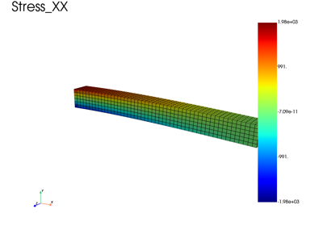
Cantilever beam using 3D hexahedral elements
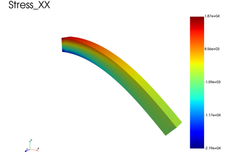
3D cantilever beam with geometric nonlinearities
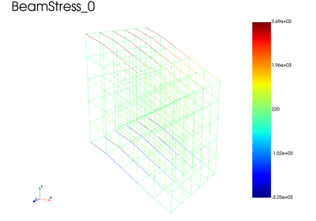
Beam lattice structure using a beam model with geometric nonlinearities
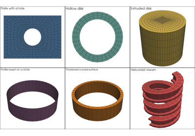
Creating simple meshes and swept geometries
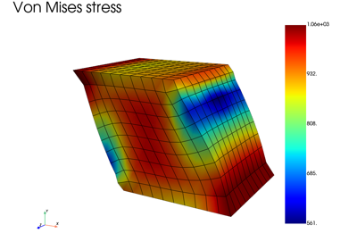
Visualization tutorial: shear test of a cube
Boundary conditions and constraints
Periodic boundary conditions (2D, 3D, in-plane and off-axis), mean value constraints, rigid ties and mean motion constraints, pressure loads, and problems that combine several meshes.


Off-axis tensile test on a gyroid unit cell with periodic boundary conditions

In-plane periodic boundary conditions on a woven composite ply

Periodic BC without node pinning: mean displacement constraint


Contact and interfaces
Contact between deformable bodies and self-contact, with the penalty method and
with the Incremental Potential Contact (IPC) barrier, compared with analytical
solutions (Hertz, Westergaard) where they exist. The folder also covers
self-contact in 2D axisymmetric models (tube compression) and cohesive
interfaces: Composite double-cantilever beam with a cohesive interface opens a
zero-thickness interface governed by a fedoo.constitutivelaw.CohesiveLaw.
The IPC examples (ipc_* and the other scripts using IPCContact or
IPCSelfContact) require the optional dependency ipctk
(pip install fedoo[ipc]). Some of them also need gmsh to mesh curved
geometries.

Composite double-cantilever beam with a cohesive interface

Hertz axisymmetric contact benchmark: rigid sphere on elastic half-space


Gyroid self-contact under compression (3D, IPC method)

Gyroid compression with periodic BCs (3D, IPC method)

Elasto-plastic gyroid self-contact under compression (3D, IPC method)

Disk indentation (2D plane strain) — IPC contact with Hertz comparison

Sphere indentation (3D) — IPC contact with Hertz comparison


Self-contact — hole plate compression (2D, IPC method)

Tube compression (2Daxi): IPC versus penalty self-contact


Self-contact — hole plate compression (2D, penalty method)


Westergaard sinusoidal contact benchmark: IPC vs penalty
Finite strain
Geometric nonlinearities: updated and total Lagrangian formulations, hyperelastic and elastoplastic laws under large deformation, objectivity of rigid rotations, and nearly incompressible materials.
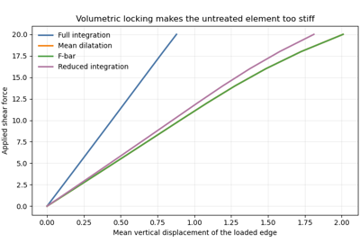
Nearly incompressible plasticity: four element formulations
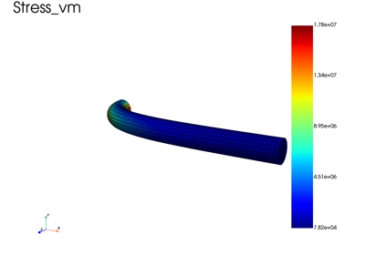
Finite-strain Neo-Hookean cantilever (rigid cap, force and displacement control)
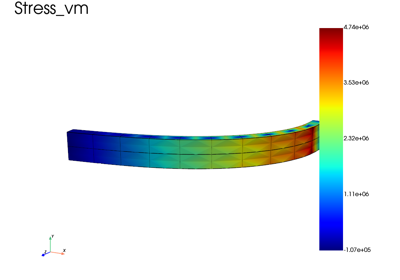
Snap-through of a compressed Neo-Hookean blade (static vs implicit dynamics)
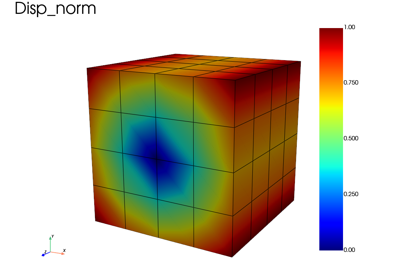
Large rigid rotation: objectivity check of the finite-strain update

Plastic simple shear: total against updated Lagrangian
Plasticity
Elastoplastic structures in small and finite strain, with Simcoon and native constitutive laws (bending, simple shear, torsion), and heterogeneous structures: a matrix with an inclusion, linear elastic or elastoplastic, with three ways to assign a material to each element set.

Matrix with a stiff inclusion: three ways to assign materials

Elastoplastic matrix with an elastic inclusion (Heterogeneous law)

2D elastoplastic three-point bending (Simcoon EPICP)

2D elastoplastic three-point bending written from low-level operators


Elastoplastic simple shear of a cube (finite strain, UL)

Shells and plates
Plate and shell elements: homogeneous and laminated sections in linear elasticity, and an elastoplastic shell in large rotations (corotational kinematics). The elastic ping-pong ball compression is in the basic examples.


Plate elements on a cantilever: comparison with beam theory

Dynamics and rigid bodies
Implicit time integration of structural dynamics (Newmark schemes attached to
the problem), dynamic crack propagation, and rigid bodies
(fedoo.constraint.RigidBody): free fall, then bodies of increasing
geometric complexity (sphere, Stanford bunny, cow) bouncing on a floor through
IPC contact, and a deformable shell ball dropped on a plate.
The examples with contact require the optional dependency ipctk
(pip install fedoo[ipc]).
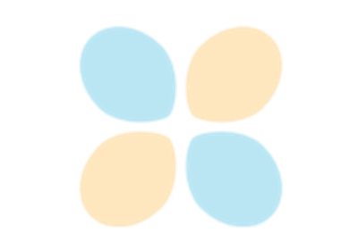
Dynamic crack propagation by node release in a pre-strained strip

Shell ping-pong ball dropped on a solid plate (dynamic MultiMesh, IPC)

Rigid sphere bouncing on an analytic plane (IPC, Rayleigh damping)


Rigid cow tumbling on a plane (IPC, non-convex body)

Rigid-body free fall: validation of the time integration
Thermal and thermomechanical problems
Transient heat conduction, weakly coupled thermomechanical problems and thermal expansion loads on a heterogeneous structure.
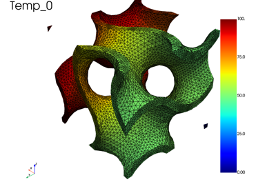
Transient heat conduction in a gyroid lattice
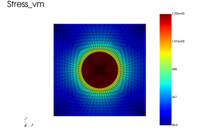
Heterogeneous material: inclusion in a matrix under thermal loading

Weakly coupled thermo-mechanical analysis of a gyroid lattice
Poromechanics
Biot poroelasticity of saturated porous media, in small and finite strain. See Poromechanics for the formulation.
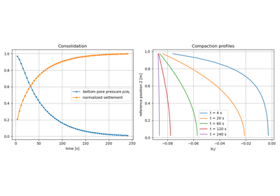
Finite strain consolidation of a hyperelastic porous column
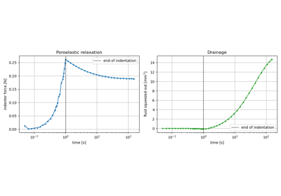
Indentation of a hyperelastic soft tissue: fluid exudation

Inf-sup (LBB) stable elements: Taylor-Hood interpolation
Custom weak forms
Problems defined directly from a user weak form written with fedoo’s differential operators: Stokes and Navier-Stokes flows. The Poisson equation is in the basic examples (Define and solve user equation).

Stokes flow around a cylinder with a user-defined weak form

Transient Navier-Stokes flow around a cylinder with a user weak-form class

Lid-driven cavity (Stokes flow) with a user-defined weak form
Homogenization
Effective properties of periodic and non-periodic microstructures, and FE2 multiscale analysis.

FE2 multiscale analysis of a plate with a hole (octet-truss unit cell)

Homogenized elastic stiffness of periodic unit cells
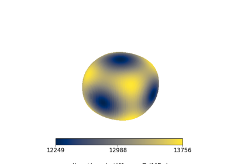
Homogenized stiffness of a periodic cell from low-level operators
Meshing
Nodal gradient and Hessian recovery on a mesh, used to drive anisotropic adaptive remeshing (mmg). Mesh generation is shown in the basic examples.